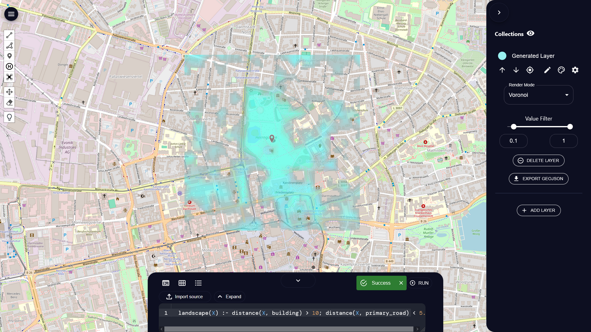

Graphical User Interface
ProMis comes with a GUI that provides an interactive interface to its features. To employ the GUI, make sure that you have installed ProMis according to the instructions above. Then, first run the following commands to start the backend.
1cd gui/backend
2fastapi run main.py
Afterwards, you can start the frontend using npm (Node.js) with the following commands.
1cd gui/frontend
2npm install # Only once or if changes where made
3npm run start
We also provide Dockerfiles for backend and frontend for an automated setup:
1cd gui
2docker compose build
3docker compose up
Either way, you can open http://localhost:3000 in a browser of your choice to start interacting with ProMis.
Once you have opened the GUI in your browser, you can check that everything works by doing an example run. First, from the top-left, click the drone icon and place a marker where you would like to center the mission area. Second, click the button at the bottom to open the mission design interface. Here, you can either import ProMis code from disk using the Import Source button, or click Edit. You may further configure your run by selecting an origin, height, width (in meters) and a resolution of the mission landscape. Afterwards, you can click the Run button and wait for the mission landscape to show on the map.
The following shows an example of entering the simple model landscape(X) :- distance(X, building) > 10; distance(X, primary_road) < 5.:
For more detailed information, consult the GUI’s own README.